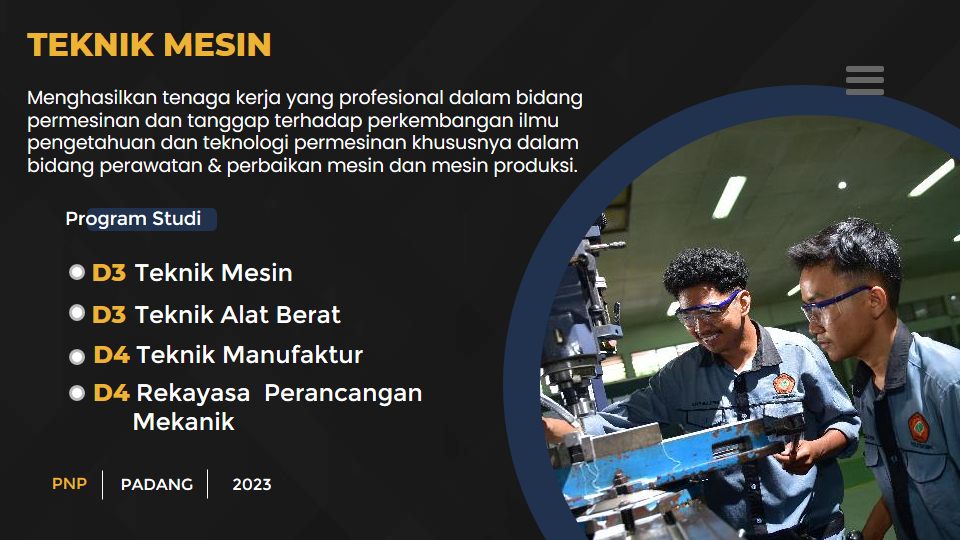
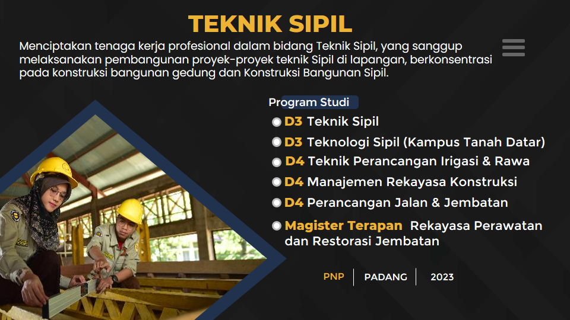
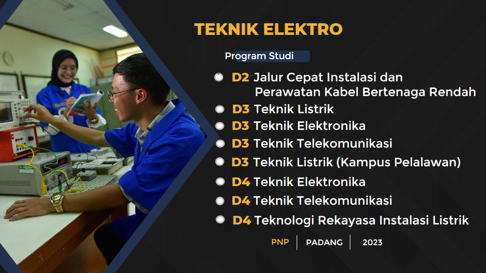
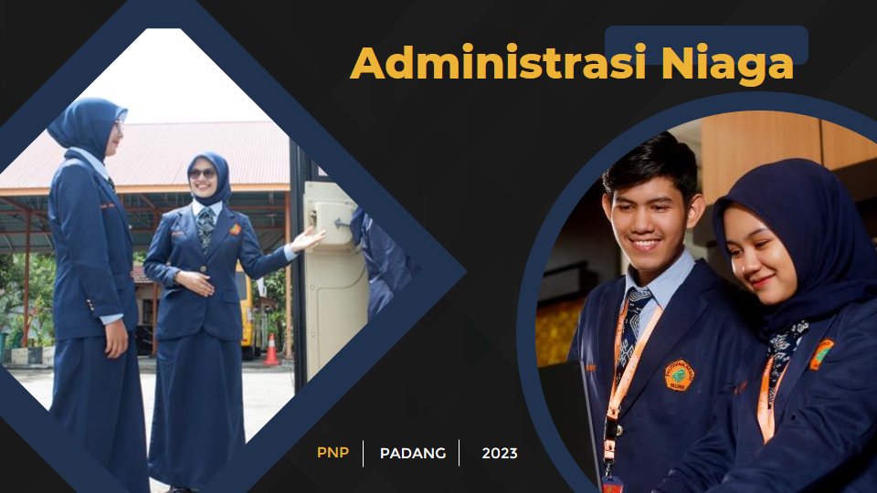
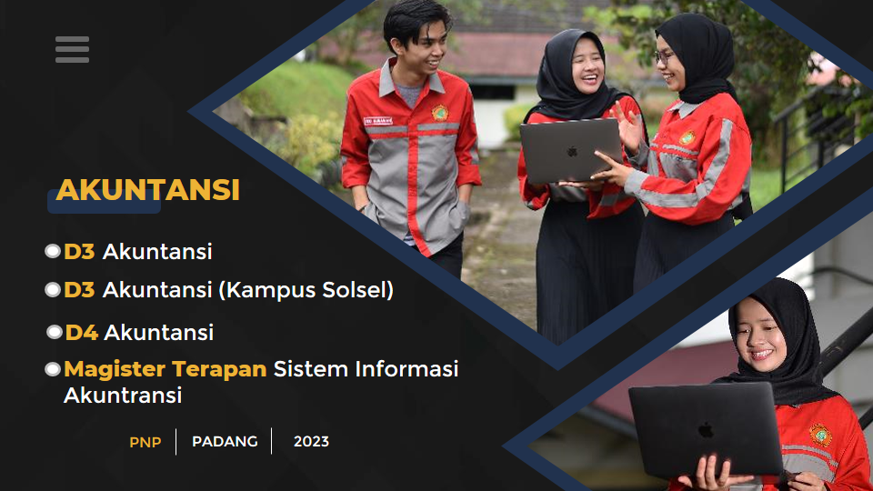
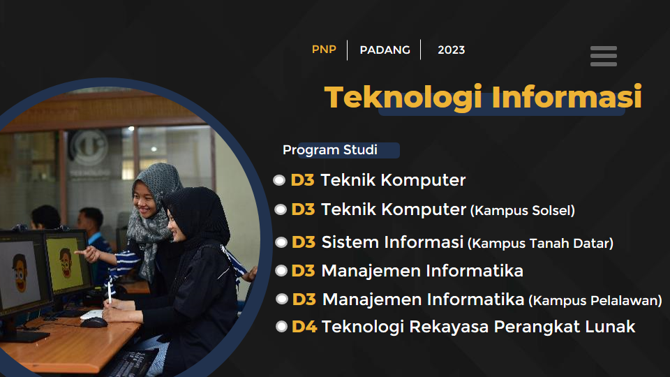
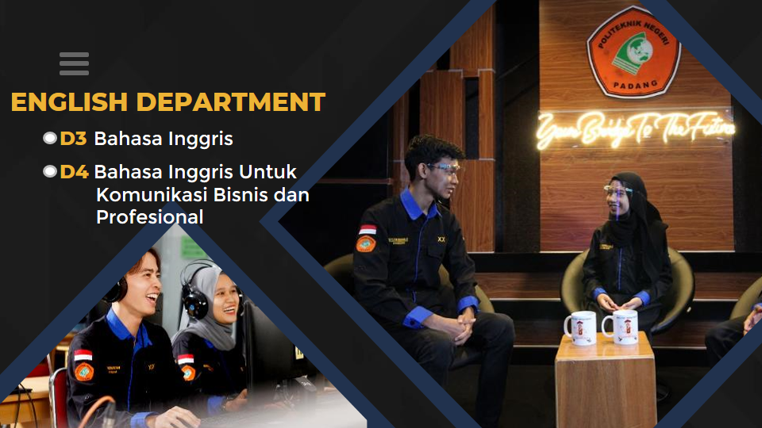

Sejarah

Politeknik Negeri Padang didirikan pada tahun 1987, di mana
keberadaan politeknik merupakan salah satu dari 17 (tujuh belas)
politeknik pertama di Indonesia, yang bertujuan menjawab tantangan
perkembangan dunia industri dan dunia usaha yang menuntut kompetensi
dari tenaga-tenaga kerja terampil, professional dan mandiri yang
lebih mengutamakan attitude, knowledge dan skill serta kompeten di
bidangnya.
Pada awal berdirinya dikenal dengan nama Politeknik Engineering
Universitas Andalas yang hanya menyelenggarakan Program Studi Bidang
Rekayasa/keteknikan. Dengan Program Studi Teknik Mesin, Sipil,
Listrik dan Elektronika Komunikasi. Tahun 1997 diganti nama menjadi
Politeknik Universitas Andalas dengan pertimbangan karena dibuka
Program Studi Bidang Tataniaga (Akuntansi, Administrasi Bisnis).
Dalam rangka memenuhi tuntutan dunia kerja maka Politeknik membuka
program studi baru, sampai saat ini Politeknik telah mempunyai 20
program studi (12 program studi D.3 dan 8 program D.4
Dalam rangka menuju kemandiriannya maka Politeknik saat itu
mempunyai dua nama yaitu Politeknik Universitas Andalas dan
Politeknik Negeri Padang .
Politeknik Negeri Padang hadir di tengah-tengah masyarakat dengan
menerapkan sistem pendidikan yang konsisten pada jalur pendidikan
vokasional dengan menerapkan sistem pembelajaran yang aplikatif
serta secara terus menerus menyesuaikan diri dengan perkembangan
dunia industri dan dunia usaha yang ada untuk menghasilkan tenaga
kerja yang berkompeten sesuai dengan permintaan pasar dan mampu
bersaing pada era persaingan global.
Sebagai lembaga pendidikan yang mengutamakan mutu dan kepercayaan
dunia industri dan dunia usaha Politeknik Negeri Padang menerapkan
sistem paket semester dengan sistem pembelajaran 60% praktek dan 40%
teori. Penerapan sistem praktek bengkel yang menyamai sistem di
industri dan dunia usaha merupakan suatu langkah konsistensi untuk
menyiapkan Tenaga Ahli Madya (AMd) dan Sarjana Sains Terapan (SST)
yang terampil dan mempunyai etos kerja sesuai kebutuhan industri.
Rancangan kurikulum pendidikan yang bersifat dinamis yang dirancang
sesuai dengan kebutuhan industri/pasar dan tetap mengacu kepada
peraturan pemerintah serta undang- undang pendidikan yang berlaku,
merupakan suatu langkah strategis yang diterapkan di Politeknik
Negeri Padang dalam menghasilkan lulusan yang sangat diminati oleh
dunia usaha dan dunia industri terkemuka di Indonesia dan di
mancanegara.
Tentang
Politeknik Negeri Padang telah tumbuh dan berkembang seiring dengan
pesatnya perkembangan ilmu pengetahuan dan teknologi. Dengan selalu
melakukan evaluasi diri dan pengembangan kemitraan dengan berbagai
lembaga, merupakan suatu komitmen kelembagaan sehingga setiap
perubahan baik di sisi internal maupun eksternal disikapi dengan
positif. Hal inilah yang membuat Politeknik Negeri Andalas selalu
berbenah sehingga lulusan Politeknik Negeri Padang saat ini sangat
diminati.
Banyaknya rekrutmen yang dilakukan terhadap para alumni dan
mahasiswa yang mau menamatkan pendidikan oleh berbagai perusahaan
baik itu perusahaan nasional maupun perusahaan asing merupakan suatu
bukti bahwa lulusan Politeknik Negeri Padang mampu bersaing di
antara lulusan Perguruan tinggi yang ada.
Penerapan sistem pendidikan yang lebih ditekankan pada etika dan
etos kerja yang ditunjang dengan kemampuan akademik serta
dilengkapinya Politeknik Negeri Padang dengan berbagai peralatan
baik itu di laboratorium dan bengkel merupakan suatu hal yang sangat
menunjang bagi segenap civitas akademika dalam mengembangkan potensi
diri terutama untuk memperoleh ilmu pengetahuan. Penerapan sistem
praktik bengkel yang menyamai sistem di industri merupakan suatu
langkah konsistensi untuk menyiapkan tenaga Ahli Madya (A.Md.) yang
terampil dan mempunya etos kerja sesuai kebutuhan industri.
Jurusan
Politeknik Negeri Padang memiliki tujuh Jurusan sebagai fokus dalam
pengajaran, penelitian dan pengabdian.
| Rekayasa |
Tata Niaga |
| Rekayasa |
Administrasi Niaga |
| Teknik Mesin |
Akuntansi |
| Teknik Sipil |
|
| Teknologi Informasi |
Bahasa Inggris |

Teknik Mesin
Menghasilkan tenaga kerja yang profesional dalam bidang
permesinan dan tanggap terhadap perkembangan ilmu pengetahuan
dan teknologi permesinan khususnya dalam bidang perawatan dan
perbaikan mesin serta mesin produksi.

Teknik Sipil
Menciptakan tenaga kerja profesional dalam bidang Teknik Sipil,
yang sanggup melaksanakan pembangunan proyek-proyek teknik Sipil
di lapangan, berkonsentrasi pada konstruksi bangunan gedung dan
Konstruksi Bangunan Sipil.

Teknik Elektro
Menghasilkan tenaga kerja yang profesional dalam bidang teknik
elektro yang sesuai dengan kompetensi yang dibutuhkan.

Administrasi Niaga
Jurusan Administrasi Niaga memiliki Program Studi D3
Administrasi Bisnis dan D3 Usaha Perjalanan Wisata

Akuntansi
Setelah meluluskan sepuluh angkatan D III untuk level klerikal
yang terserap sangat baik oleh dunia industri, maka sejak tahun
2009 Jurusan Akuntansi mengembangkan program studi D IV untuk
mengapresiasi kebutuhan industri untuk level supervisor.

Teknologi Informasi
Menghasilkan tenaga professional tingkat ahli madya di bidang
Teknologi Informasi, khususnya pengelolaan informasi berbasis
komputer sehingga mampu bekerja di berbagai instansi,
perkantoran organisasi dan bisnis modern.

Bahasa Inggris
Sebagai Jurusan Baru, Jurusan Bahasa Inggris memiliki Program
Studi D3 Bahasa Inggris
Program Studi
Menghasilkan tenaga kerja profesional dalam bidang
permesinan dan tanggapterhadap perkembangan ilmu pengetahuan
dan teknologi permesinan khusunya dalam bidang perawatan dan
perbaikan mesin serta mesin produksi.
Lebih Lanjut
Menitik beratkan pada pembentukan tenaga ahli/terampil yang
memiliki dasar-dasar ilmu keteknikan dan alat berat serta
mampu bekerja dengan menggunakan workshop tools dan workshop
equipment dengan benar dan aman sesuai dengan service
literature.
Lebih Lanjut
Menghasilkan lulusan yang profesional di bidang teknik
manufaktur yang kompetitif di pasar kerja, baik regional,
nasional maupun internasional dalam menciptakan daya manusia
di bidang manufaktur yang berkualitas dan tanggap terhadap
perubahan dan perkembangan pasar dan industri.
Lebih Lanjut
MENCIPTAKAN TENAGA KERJA PROFESIONAL DALAM BIANG Teknik
Sipil, yang sanggup melaksanakan pembangunan proyek-proyek
Teknik Sipil di lapangan, berkosentrasi pada Konstruksi
Bangunan Gedung dan Konstruksi Bangunan Sipil baik sebagai
pelaksana, pengawas dan estimator.
Lebih Lanjut
Menghasilkan lulusan yang professional di lapangan yang
dititik beratkan pada pelaksanaan dan pengawasan pekerjaan
serta mampu menghitung, merencanakan anggaran biaya
proyek-proyek pembangunan bangunan air …
Lebih Lanjut
Menghasilkan tenaga profesional di bidang manajerial
khususnya pada proyek konstruksi dan mampu menyusun
tahapan-tahapan perwujudan proyek konstruksi yang dimulai
dari tahap penyusunan id
Lebih Lanjut
Menghasilkan tenaga kerja profesional di lapangan yang
dititik beratkan pada Perancangan Jalan dan Jembatan agar
terciptanya tenaga kerja profesional yang mampu merencanakan
serta menghitung anggaran biaya proyek . . .
Lebih Lanjut
Menghasilkan lulusan dengan kompetensi/keahlian:
-
Bridge Maintenance Engineer Ahli monitoring layak fungsi
dan keselamatan jembatan
-
Bridge Forensic Engineer Ahli identifikasi kerusakan
jembatan
-
Bridge Restoration Engineer Ahli perbaikan dan peningkatan
jembatan
Lebih Lanjut
Menghasilkan lulusan yang berorientasi dalam bidang
penerapan tentang instalasipenerangan dan teknologi
pembangkit, sistem distribusi listrik, perwatan/perbaikan
mesin-mesin industri serta perancangan dan pengembangan
teknik instrument …
Lebih Lanjut
Menghasilkan lulusan yang profesional di bidang elektronika
industri, meliputi perancangan rangkaian elektronika
industri, menganalisis untuk perbaikan dan perawatan control
serta mengaplikasikan komputer dan mikrocontroller untuk
industri.
Lebih Lanjut
Menghasilkan tenaga kerja yang dalam bidang telekomunikasi
kawat dan radio khususnya merancang sistem komunikasi dengan
transmisi udara (wireless) dan transmisi kawat (on-wire),
membuat prototype, memasang jaringan telekomunikasi, . . .
Lebih Lanjut
Program Studi D.4 Teknologi Rekayasa Instalasi Listrik Visi
program studi Menghasilkan Tenaga Ahli Vokasi dibidang
Teknologi Rekayasa Instalasi Listrik terbaik di Wilayah
Indonesia Bagian Barat pada tahun 2026. Misi program studi
Meningkatkan mutu pendidikan sesuai kompetensi Teknologi
Rekayasa Instalasi Listrik dalam rangka mewujudkan Visi.
Mengembangkan ilmu terapan di bidang Teknologi Rekayasa
Instalasi…
Lebih Lanjut
Menghasilkan lulusan yang menguasai kemampuan dalam
melaksanakan pekerjaan membangun sistem elektronika dan
instrumentasi di industri, memiliki kemampuan dalam bidang
Maintenance & Repair,
Lebih Lanjut
Menghasilkan lulusan yang berkarakter dan mampu berkompetisi
ditingkat nasional yang menguasai ilmu pengetahuan dan
teknologiterapan di bidang telekomunikasi sesuai kebutuhan
industri.
Lebih Lanjut
Menghasilkan tenaga Ahli Madya profesional dalam bidang
kesekretariatan dan administrasi perkantoran sesuai dengan
kebutuhan dunia usaha dan industri yang berkeahlian tinggi
dalam menangani . . .
Lebih Lanjut
Menghasilkan lulusan yang mampu dalam merancang tour, baik
inbound maupun outbound, melakukan reservasi dan dokumentasi
tour, melakukan pemanduan (guiding) wisata.
Lebih Lanjut
Menciptakan lulusan yang mampu dan terampil dalam bidang
Asistant Accounting, Financial Computer System, Internal
Auditor, Asistant Auditor, Asistant Analisis System,
menghitung dan membuat laporan pajak.
Lebih Lanjut
Menghasilkan lulusan yang memiliki keahlian dan wawasan
dibidang akuntansi , audit pajak dan keuangan secara
integrasi dan komperehensif yang bisa diterapkan pada
perusahaan swasta. Instansi pemerintah maupun lembaga
keuangan baik berskala nasional maupun internasional.
Lebih Lanjut
Memiliki kemampuan membangun jaringan komputer internet dan
intranet, mampu memilih model dan infrastruktur jaringan
untuk berbagai keperluan yang berbeda, mampu melakukan
perawatan, perbaikan sistem jaringan komputer, serta mampu
menjadi administrator dan . . .
Lebih Lanjut
Memiliki kemampuan membuat aplikasi dan mengelola sistem
informasi berbasis LAN (Local Area Network) dan Internet
untuk berbagai organisasi perkantoran dan bisnis serta
menguasai berbagai program aplikasi (programmer).
Lebih Lanjut
Lulusan program studi D.IV – Teknologi Rekayasa Perangkat
Lunak diharapkan memiliki kemampuan terhadap penguasaan dan
pemanfaatan Teknologi Rekayasa Perangkat Lunak seperti
merancang, membangun sistem informasi, basisdata, memilih
dan …
Lebih Lanjut
Menghasilkan lulusan yang memiliki kemampuan berfikir
kritis, analitis dan memiliki rasa kepercayaan diri yang
tinggi dan keterampilan berkomunikasi dalam bahasa inggris
dengan baik secara lisandan tulisan untuk memenuhi
kepentingan dunia usaha dan dunia industri.
Lebih Lanjut
Menghasilkan lulusan yang handal sebagai Pengelola Objek dan
daya tarik wisata (DMO), Tenaga ahli di konsultan pariwisata
(peneliti muda, asisten peneliti, tenaga lapangan), Manager
Sales dan Marketing Pariwisata, Event Organizer,
Entrepreneur di Industri Pariwisata dan Hospitaliti, dan
Peneliti di Bidang Pariwisata.
Lebih Lanjut